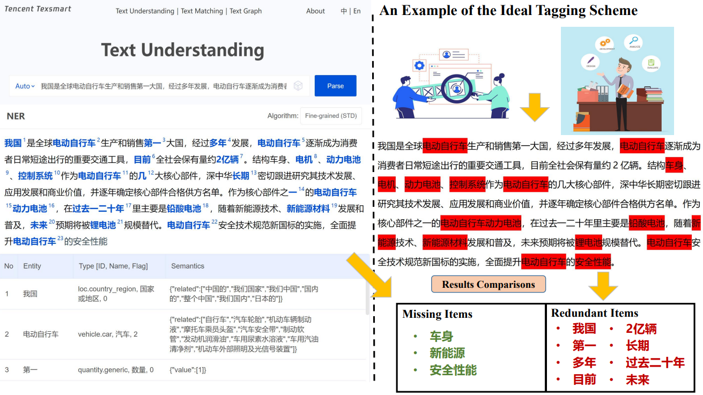
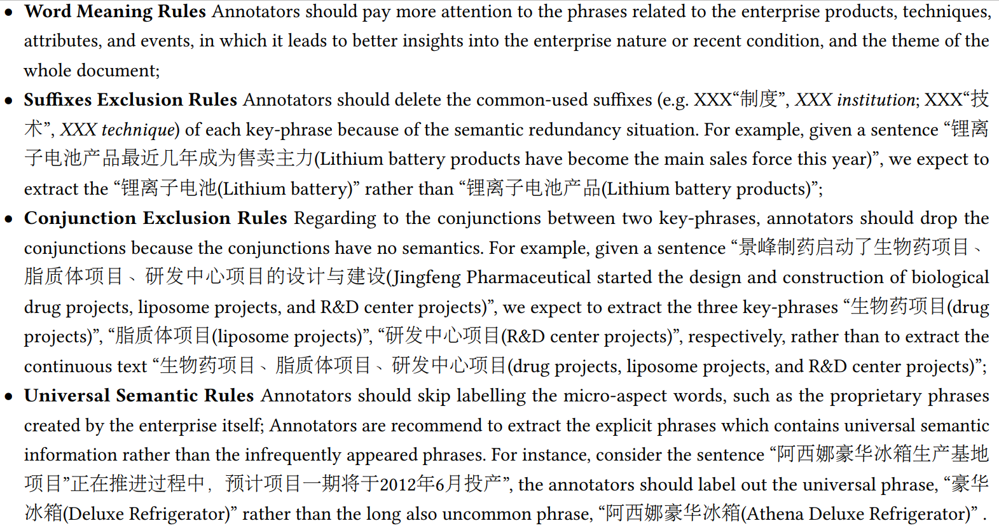

DataSet Construction Motivation
Research Background
With the rapid advent of the science technology and industrialization, 21st century has engaged in the inevitable trend of technological revolutions and economic globalization. The cross-field of financial and high-technology has received a lot of attention from both industries and academic communities in recent decades. As we know, the Chinese high-technology techniques which are accompanied by the booming of financial market develop rapidly, from which we can discover massive valuable development experiences to promote the development of the world-global technology. An intelligent financial analysis system can effectively help the investors to conduct various investment activities (e.g. stock price-forecasting, corporate risk aversion and stock price volatility trace). The solutions about how to efficiently extract the interested information in the cross-domain of financial & high-technology remains an important research direction.
Corpus Deficiency
For the mainstream Neural Network based supervised learning approaches, the sufficient annotated corpora directly influence the NN-based model's final performance. However, since domain-specific information extraction is still in its infancy, there is no available data source in the cross-domain of financial & high-technology. The severe data deficiency has caused the considerable gap of specific domain-related researches.
TexSmart Just So So ~
The AI & NLP team of the Internet Technology Corporation TENCENT built TexSmart, a natural language processing & analysis tool, which contains many NLP features such as Fine-grained Named Entity Recognition, semantic expansion, and deep semantic expression for specific type of entities. More details can be accessed from the official website. TexSmart provides online APIs for the open-domain Expression-level Information Retrieval task. But due to its open-domain oriented feature, it might handle poorly in some domain-specific scenarios (financial & High-tech domain). To validate this possible situation, we make a detailed comparison of the Information Retrieval performances between the TexSmart and the financial expert standards. As vividly shown in picture below, based on the extracted results of TexSmart and the financial experts' experience, the TexSmart exist a plenty Missing Item (should be included in the interest keywords) and Redundant Items (should not be included in the interest keywords), which is an obvious discrepancy compared with the experts' ideal annotations. The incorrect identification could affect the downstream NLP tasks such as Document Theme Recognition and Paragraph-Level Reading Comprehension. Thus, it is extremely necessary to develop an Information Retrieval dataset in financial & High-tech domain to generate a better extraction model for the Information Extraction task.
Construction Procedures
1. Extraction from CMD&A
The Chinese Research Data Services Platform (CNRDS) has recorded a large amount of historical information of most Chinese public companies. From this website, we request the official API and download the Management’s Discussion and Analysis (CMD&A) documents of Chinese financial enterprises from 2008 to 2022 year (14-years span until now). The downloaded corpus contains up to millions of enterprise annual reports.
2. Fintech Domain Filtering
The China Securities Regulatory Commission (CNSRC) has formulated the China National Economic Industry Classification Guidelines, which indicates the pre-defined industrial classification for all Chinese public companies. We utilize these classification guidelines to filter the high-technology related CMD&A documents from the original corpus.
3. Key-Phrase Annotation
We formulate several primary labelling schemes as follows to circumscribe the scope of the interested phrases which need to be annotated. Given a set of specific-domain documents, the crowd-sourcing annotators were recruited to mark the target texts following these regulations.
